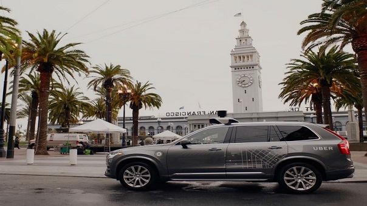

PROHÍBEN CARROS AUTÓNOMOS DE UBER EN SAN FRANCISCO

Desde el pasado 14 de diciembre, Uber puso a funcionar una flota de 16 carros autónomos en las calles de San Francisco (Estados Unidos), con la que esperaba apoyar la modalidad de UberX. Sin embargo, a los pocos días la compañía ha decidido retirar los vehículos de las calles de esta ciudad para trasladarlos a Arizona luego de las medidas tomadas por el Departamento de Vehículos Motorizados de California.
La entidad revocó la licencia que tenía Uber para utilizar sus carros autónomos debido a que, según el organismo, estos vehículos deben pagar por una regulación especial como lo hacen los diferentes carros que cuentan con esta tecnología.
En un comunicado a través de su sitio web, Uber manifestó que, en su opinión, sus carros no deben someterse a estos parámetros. Según la compañía, esto se debe a que entre las medidas que ellos tienen para que dichos vehículos autónomos operen se incluye la de tener siempre un supervisor detrás del volante con el fin de monitorear que todo se encuentre en orden, aunque ellos no conduzcan.
Como protesta, Uber decidió mover los carros a Arizona, estado al que llega con grandes expectativas y con la gratitud de su gobernador, Doug Ducey. El mandatario dijo mediante un comunicado en su sitio web que “Arizona les da la bienvenida a los carros autónomos de Uber con los brazos abiertos y los caminos abiertos. Mientras que California pone freno a la innovación y el cambio con más burocracia y más regulación, Arizona está allanando el camino para las nuevas tecnologías y los nuevos negocios”.
Primera flota de carros autónomos de Uber
Pittsburg, en agosto de 2016, fue la primera ciudad en recibir los vehículos autónomos de Uber. En ese momento, una alianza entre Volvo y Uber presentó la primera flota de carros autónomos con fines comerciales en el mundo.
Si bien compañías como Google y Tesla llevan años desarrollando prototipos de carros autónomos, esta fue la primera vez que este tipo de vehículos saltaron a las calles. Los carros autónomos de Uber funcionan con la supervisión de personas que se ubican en el asiento del conductor. Los carros cuentan, además, con docenas de sensores, cámaras y equipos de localización que permiten su funcionamiento.